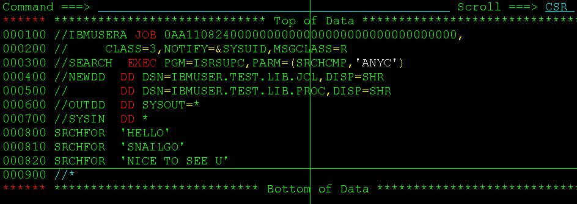

用ISRSUPC在PDS所有member中搜索指定字符串
2011-08-27
在一个PDS中搜索名字叫做“snailgo”的member，可以在command line上输入命令mem snailgo即可。但是，如果想搜索整个PDS下所有的成员(Member)中指定字符串，有没有办法呢？答案是肯定的，我们可以用一个比较的utility ISRSUPC来实现，同样的，只需submit一个JCL。

这里，我们在PDS “IBMUSER.TEST.LIB.JCL”和“IBMUSER.TEST.LIB.PROC”下的所有member中搜索字符串”SNAILGO”。参数为：PARM=(SRCHCMP,ANYC)，其中SRCHCMP指定要搜索的字符串，ANYC表示ANY Case，即搜索任何符合的情况，要了解更详细的PARM的用法，可以参考IBM红宝书IBM manual ISPF/PDF Guide and Reference for MVS (SC34-4258，这里我只介绍最基本的用法。 当然，您也可以一次搜索多个不同的字符串：

最后，在JOB的输出Log里面有个OUTDD，里面就是详细的搜索报告了~
Category: articles Tagged: z/OS